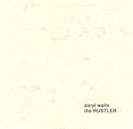

Home Artist links Label link

Daryl Waits - The Rustler
| Artist: | Daryl Waits |
| Title: | The Rustler |
| Label: | Paradeco records pcd-042 |
| Length(s): | 34 minutes |
| Year(s) of release: | 2004 |
| Month of review: | [11/2005] |
Line up
Adam King - drums
Daryl Waits - all other instruments
Tracks
| 1) | Afamishiado | 2.31
|
| 2) | First Time | 2.12
|
| 3) | Bingo | 1.56
|
| 4) | Freem | 1.16
|
| 5) | Fire | 2.39
|
| 6) | Neu\ | 1.29
|
| 7) | Gather | 2.22
|
| 8) | Hulk Hands | 1.33
|
| 9) | I Want Bees! | 1.22
|
| 10) | Punk'd | 1.48
|
| 11) | Ralph Nader Looses Again | 1.23
|
| 12) | Pillow | 1.42
|
| 13) | Optimum | 2.15
|
| 14) | Ham Hocks | 1.23
|
| 15) | Louder | 1.36
|
| 16) | Parding, Parding | 0.59
|
| 17) | Splitter | 1.26
|
| 18) | Tabletop | 2.03
|
| 19) | Plump | 2.16
|
Summary
The music
This discs displays a cross over between singer songwriter and noise. Waits' voice reminds me of Lou Reed's on a regular basis, especially of early to mid seventies material. Not so much because of the timbre, but mainly because of the emotion and the cadens. Apart from that the guitar moves in that direction at times as well, although in even more cases we get a noise sound that moves somewhere between the neuroticism of Pixies and the droning psychedelic sounds of a Codeine. Sometimes there's a hint of Greg Sage's guitar sound. This makes for a nice enough stylistic blend. Having said that, as the album progresses it becomes apparent that it lacks the diversity, both stylistically and compositionally, to captivate till the end. Especially the jangling guitars slowly but progressively turn into a drone. This effect is further enhanced by the low fi sound of this disc. Compared to Moron Parade -of which Waits is a member- this album misses the faster tracks, direly.
Conclusion
Those into lo-fi alt will probably find themselves occupied well enough with this disc. Having said that, displaying a lack of versatility in a disc as short as this one does not make me happy.
www.paradeco.com/pefrinj@paradeco.com
© Roberto Lambooy